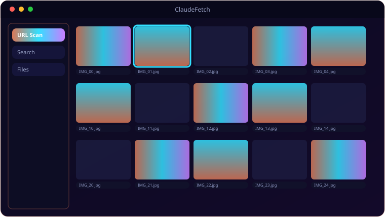

A look inside ClaudeFetch.

Everything ClaudeFetch brings to the table.
URL Scan
Paste any page, set a crawl depth (0–5), and ClaudeFetch finds every downloadable file on it.
Web Search
Search via DuckDuckGo (free, no key), then let Claude pick the most promising URLs to scan.
Smart AI Filtering
Claude (haiku, kept cheap) ranks links and filters noise so you download what matters.
Type Filters
Documents, Archives, Media, Images, UE5 Assets and Code — tick what you want, skip the rest.
Multi-File Downloads
Threaded downloads with per-file progress bars; save directory remembered between runs.
Optional Key
Works without an API key using extension-based detection; add a key to unlock AI ranking.
System requirements.
Minimum
- OS: Windows 10 (64-bit) or Windows 11
- CPU: Dual-core, 2.0 GHz
- Memory: 4 GB RAM
- Graphics: Any DirectX 11 / integrated GPU
- Storage: 250 MB + space for your files
- Display: 1280×768 or higher
Recommended
- OS: Windows 11 (64-bit)
- CPU: Quad-core, 3.0 GHz
- Memory: 8 GB RAM
- Graphics: Dedicated GPU (optional)
- Storage: SSD with a few GB free
- Display: 1920×1080 or higher
Works without a key using extension detection; add an Anthropic API key to enable AI ranking and filtering.
The details.
| Scan | requests + BeautifulSoup, crawl depth 0–5 |
| Search | DuckDuckGo (no key required) |
| AI | Claude haiku for filtering + URL ranking (optional) |
| Types | Documents · Archives · Media · Images · UE5 Assets · Code |
| Platform | Windows 10 / 11 |
Get ClaudeFetch.
AI-guided file finder and bulk downloader.
⬇ Download ClaudeFetchClaudeFetch_Setup.exe · free · Windows 10/11 · API key optional